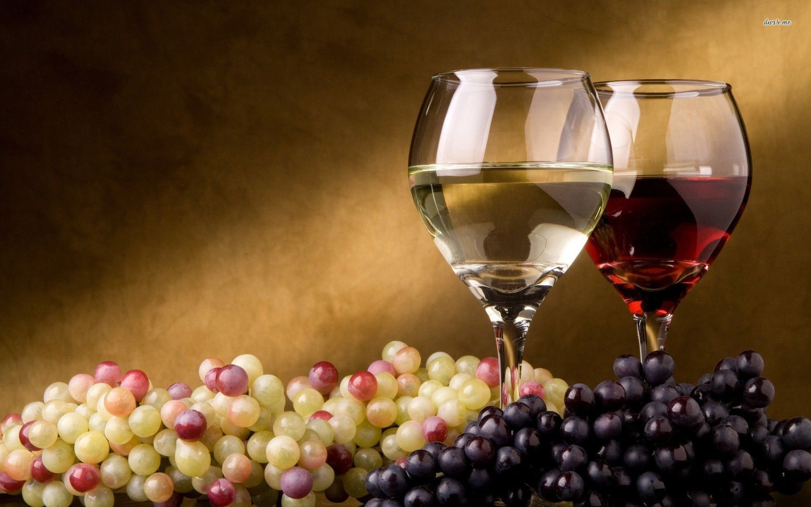

Wine

Wine is an alcoholic beverage. It is a product of the fermentation of grappes. There are many sorts of wines, but the most famous
are the red and white.
This wine making recipe yields easy homemade wine. You can choose whatever flavor you like, but my favorite is red. To complete this
project, you will need a sterile milk jug, a large latex balloon, and a rubber band. This wine is a bit stronger than regular table
wine and is excellent for cooking and drinking.
Ingredients
- 4 cups sugar
- 1 (12 fluid ounce) can frozen juice concentrate - any flavor except citrus, thawed
- 1 (.25 ounce) package active dry yeast
- 3 ½ quarts cold water, or as needed
Steps
- Gather all ingredients.
- Combine sugar, juice concentrate, and yeast in a 1-gallon jug. Fill the jug the rest of the way with cold water.
Stir or shake well until the sugar has dissolved and the mixture is well combined.
- Rinse out a large balloon; fit it over the opening of the jug. Secure the balloon with a rubber band.
- Place jug in a cool dark place. Within a day, you will notice the balloon starting to expand. As sugar turns to alcohol,
gasses will release and fill up the balloon.
- When the balloon has deflated, wine is ready to drink. It takes about 6 weeks total.
(source:
https://www.allrecipes.com/recipe/58561/homemade-wine/)